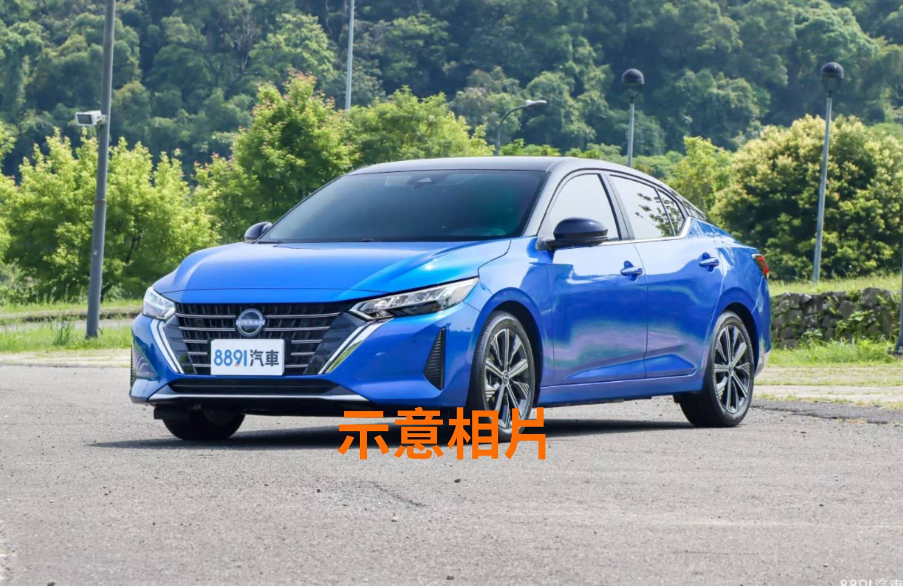

車輛詳細資訊
- 品牌 / 車型： 裕隆 Sentra
- 年份： 2015
- 價格： NT$198,000
- 里程： 92,000 公里
- 排氣量： 1598cc
- 燃料： 汽油
- 變速系統： 自排
- 車色： 白色
車況說明
經濟實惠，維修方便，適合新手駕駛。車況穩定，含基本安全配備如 ABS、雙安全氣囊，內裝乾淨。
聯絡賞車
如欲預約賞車或了解更多資訊，請前往 聯絡我們 頁面與我們聯繫。
經濟實惠，維修方便，適合新手駕駛。車況穩定，含基本安全配備如 ABS、雙安全氣囊，內裝乾淨。
如欲預約賞車或了解更多資訊，請前往 聯絡我們 頁面與我們聯繫。